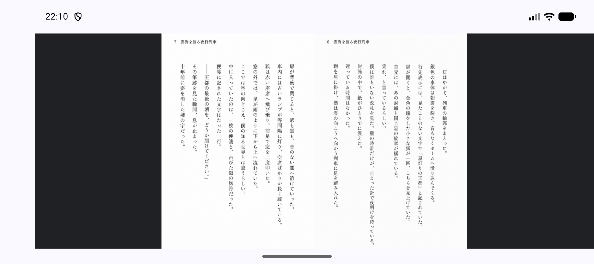
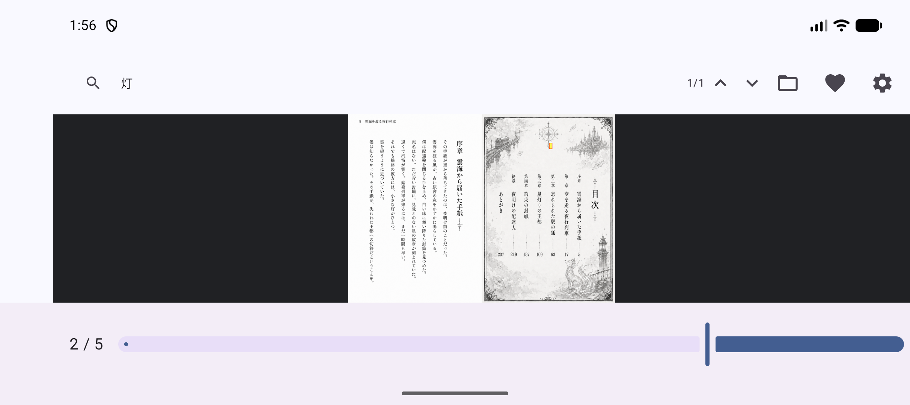
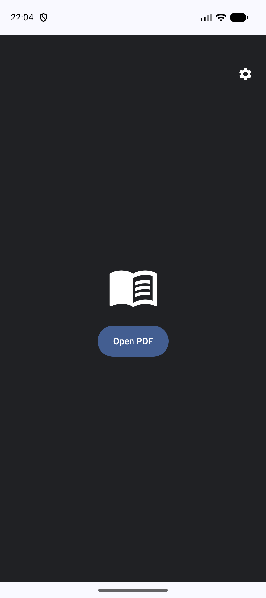
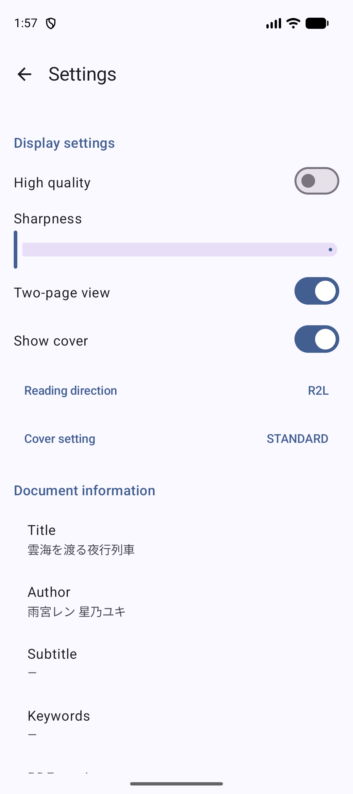

Un lecteur PDF moderne optimisé pour l'affichage en double page et la lecture R2L sur Android
Affichez deux pages côte à côte. Parfait pour les mises en page immersives de mangas et de livres d'art.
Prise en charge complète de l'ordre de lecture de droite à gauche, y compris les curseurs inversés et les gestes de balayage intuitifs.
Détecte automatiquement la mise en page et le sens de lecture à partir des métadonnées du PDF pour une expérience sans configuration.
Recherche textuelle rapide avec mise en surbrillance précise des résultats (fond jaune et bordure rouge) sur les documents.




MihirakiPDF is conçu avec la confidentialité au cœur de ses préoccupations.
*Remarque : La connexion Internet est uniquement utilisée lors de l'ouverture explicite de fichiers depuis des services de stockage cloud comme Google Drive.
Gratuit et sans publicité
L'application est entièrement gratuite. Toutes les fonctionnalités de base, telles que la visualisation de PDF, les doubles pages et la recherche, sont disponibles sans aucune restriction, quel que soit l'achat.
*Des contributions facultatives dans l'application sont disponibles pour soutenir le développeur. Les contributeurs verront un badge commémoratif spécial sur l'écran des paramètres.